Project 3
Part A: Sampling and Editing with a Pretrained Flow Model
Part B: Flow Matching from Scratch on MNIST
To write: A short introduction to Part A. Explain that this part uses the pretrained PixNerd text-to-image flow model (512x512 outputs) to generate and edit images without any training. Briefly recap flow matching: the linear interpolation xt = (1 - t)x0 + t x1 between noise (t = 0) and a clean image (t = 1), and that the model predicts the velocity x1 - x0, which is integrated from noise to an image at sampling time. Mention the three sections: visualizing training and sampling, conditional generation with guidance, and creative applications.
Section 1: Visualizing Training and Sampling
1.1 Constructing Noisy Training Inputs
To write: Introduce the image you chose for Sections
1.1–1.5 and how it was preprocessed (center-cropped, resized to 512x512, RGB scaled to
[-1, 1]). Explain the forward process xt = (1 - t)ε + t x1 and how
your interpolate function implements it. Note that it scales the image rather than
just adding noise, that a single noise sample ε was reused for every t, and that larger t
keeps more of the image (t = 0 is pure noise, t = 1 is the clean image).
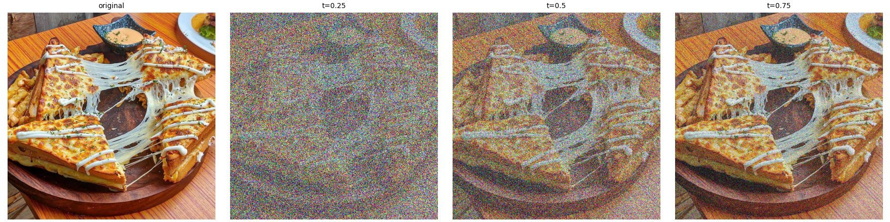
1.2 Classical Denoising
To write: Explain the Gaussian blur baseline: divide xt by t to restore the image amplitude, then blur to average out the independent noise. Describe how you picked the best sigma for each noise level (8, 2, and 1 for t = 0.25, 0.50, 0.75) and the trade-off between removing noise and destroying detail. Comment on how the results get worse as the noise level increases, especially at t = 0.25.
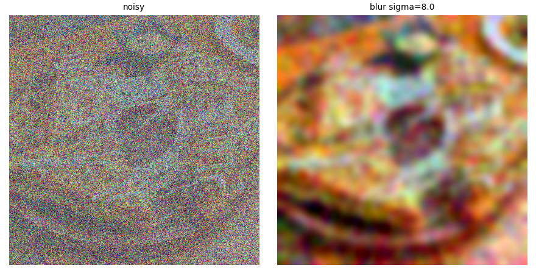
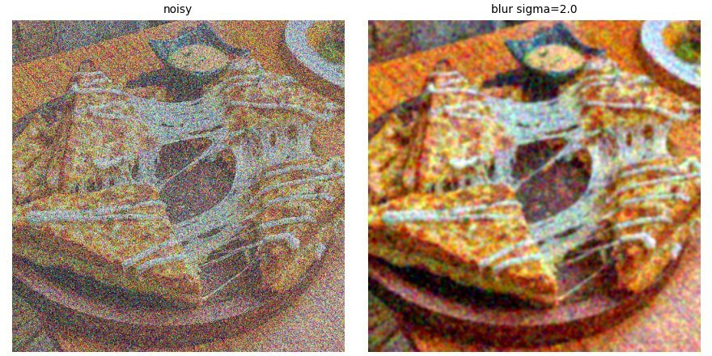
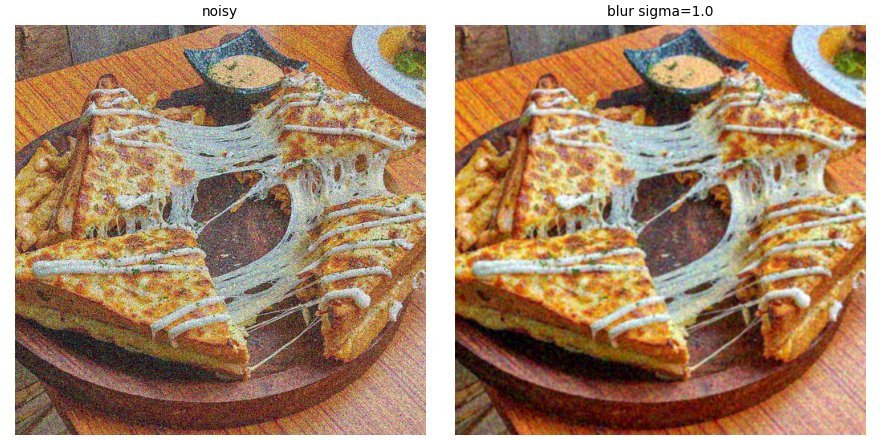
1.3 One-Step Denoising
To write: Explain how one_step_denoise uses
the pretrained model: predict the velocity at (xt, t) with the prompt
"a high quality photo", then extrapolate to the clean endpoint with
x̂1 = xt + (1 - t)vθ. Compare the estimates against the
original and against Gaussian blur: which details are recovered, which are invented or smoothed
away, and how quality changes with t.
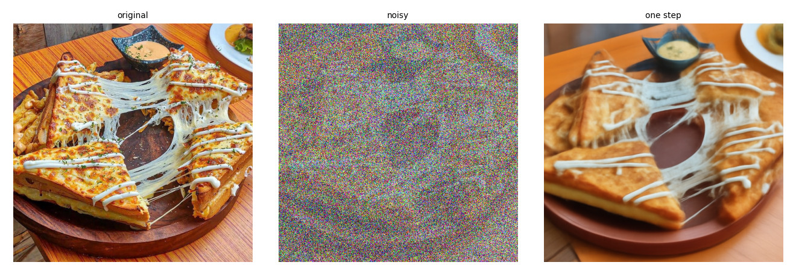
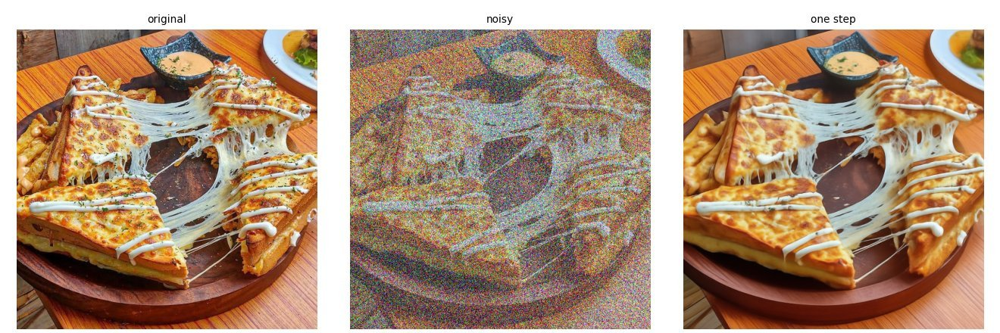
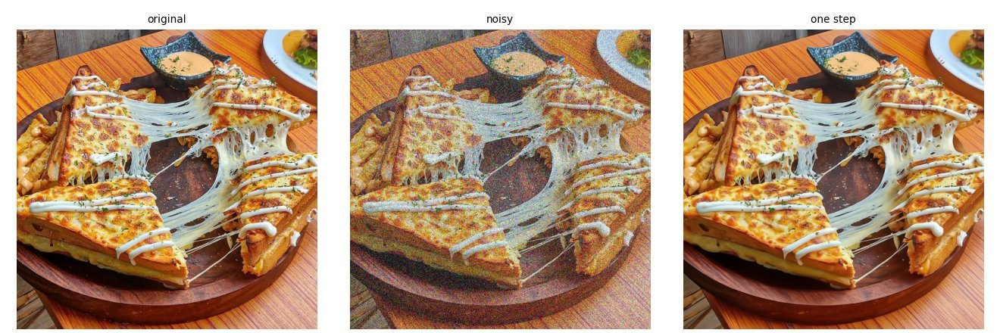
1.4 Visualizing Velocity
To write: Explain what is being visualized: the update the model predicts, (1 - t)v̂t, versus the ground-truth update (1 - t)vgt = x1 - xt, computed from the saved noise. Describe how the error heatmap is computed (per-pixel RMS across RGB, before any display scaling) and that all updates share one symmetric color scale with zero at middle gray, and all heatmaps share the same limits.
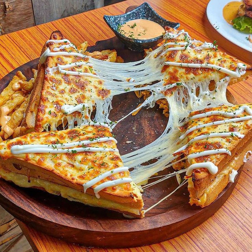
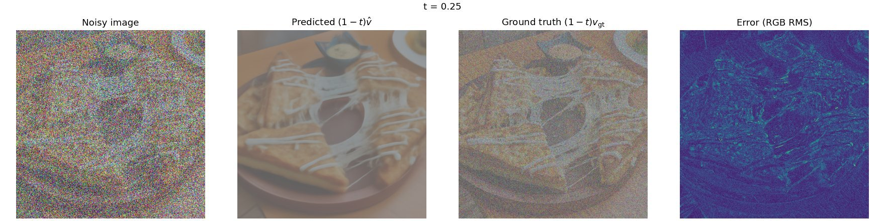
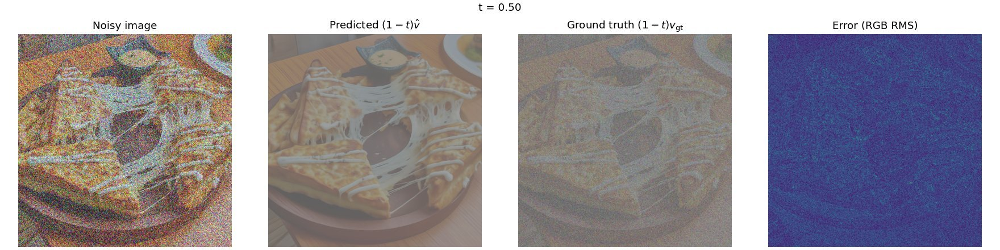
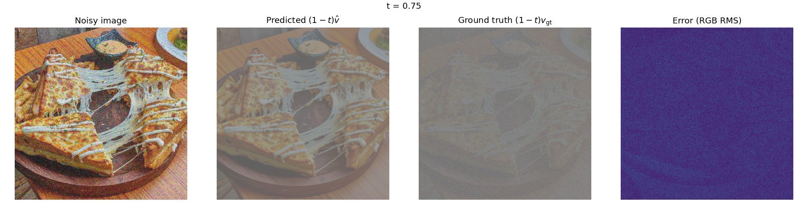
To write: Interpret the results. Point out that the predicted update looks like a clean, smooth image while the ground truth also contains the exact noise pattern, which the model cannot know. Note where the error is concentrated (edges, fine texture like the cheese strands) and how the overall error changes as t increases.
1.5 Iterative Denoising with Euler Sampling
To write: Explain why one step is inaccurate (the velocity
changes along the path) and how euler_sample fixes it by repeatedly applying
xt+h = xt + h vθ(xt, t, c) with h = 0.02,
recomputing the velocity after every update and shortening the last step to end exactly at t = 1.
Describe the constant-velocity sanity test you ran (including a start time that needs a shortened
final step) and its result. State that the trajectory below starts from the saved t = 0.50 noisy
image and runs 25 updates, shown every fifth step.
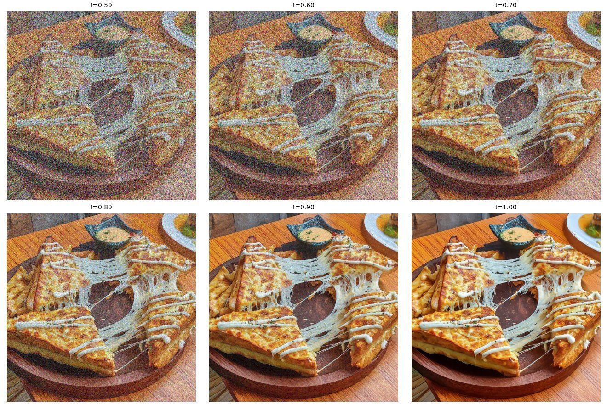
To write: Compare the four results below, all from the same t = 0.50 noisy input. Discuss how Euler sampling compares to one-step denoising (sharpness, detail, faithfulness to the original) and how both learned methods compare to Gaussian blur.
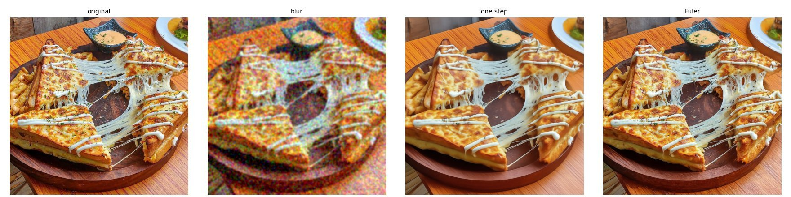
1.6 Generating Images from Noise
To write: Explain that generation from scratch is the same Euler sampler started at t = 0 from pure Gaussian noise, using the prompt "a high quality photo" with no guidance. Report what you observe: the generic prompt strongly favors portraits of people, and many samples have distorted or missing faces and odd skin textures. Note the seeds used so the comparison with CFG in Section 2.1 is clear.
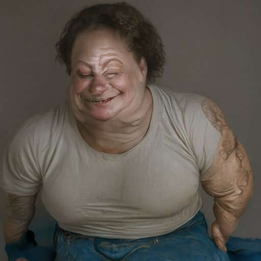
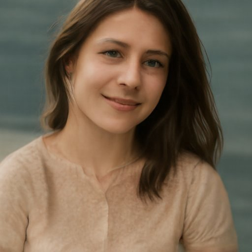
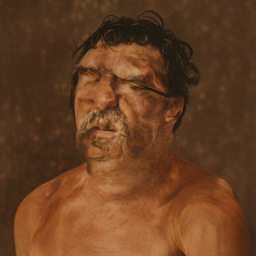
The panel below is a recreation of the conditional samples on the course website. My five samples above use the same technique, but a different starting noise image.
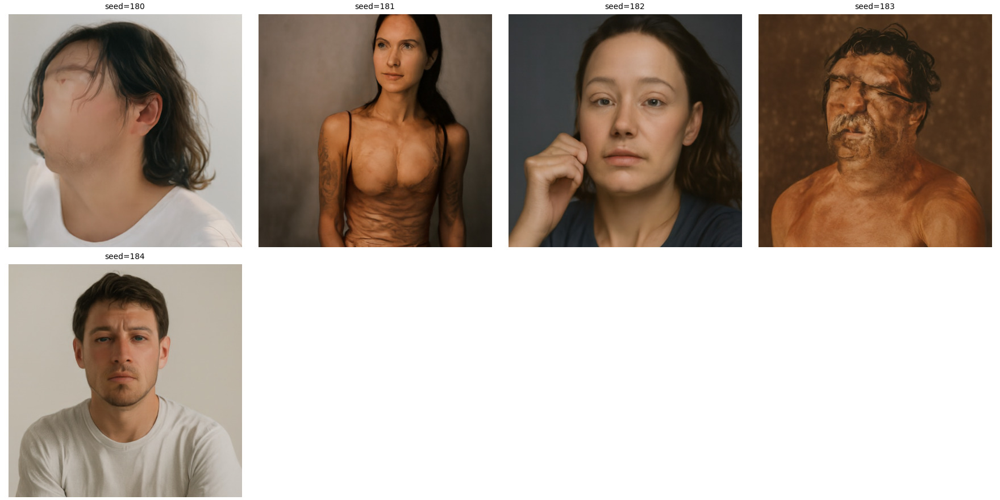
Section 2: Conditional Generation and Guidance
2.1 Classifier-Free Guidance (CFG)
To write: Explain classifier-free guidance: evaluate the model at the same xt and t with the prompt (vc) and with the empty prompt (vu), then combine them as vcfg = vc + w(vc - vu) with w = 7 and h = 0.02. Mention your check that w = 0 reproduces the plain conditional prediction.
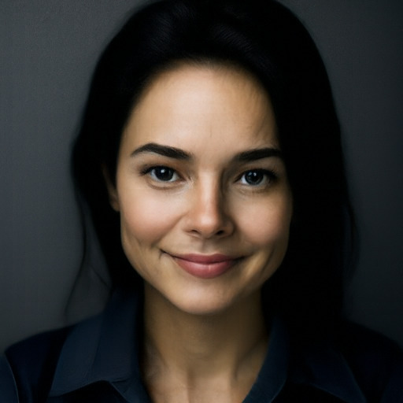
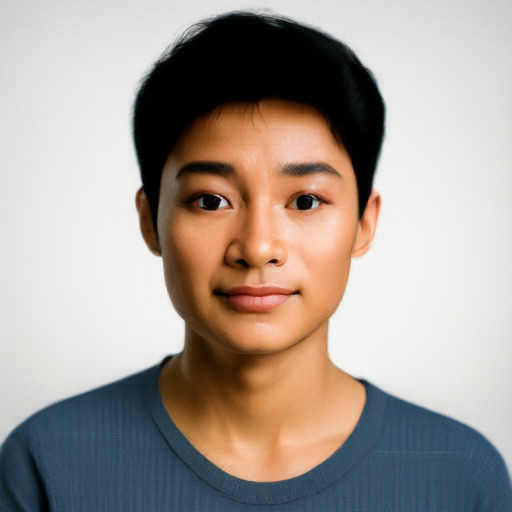
The panel below is a recreation of the classifier-free guidance samples on the course website. My five samples above use the same technique, but a different starting noise image.
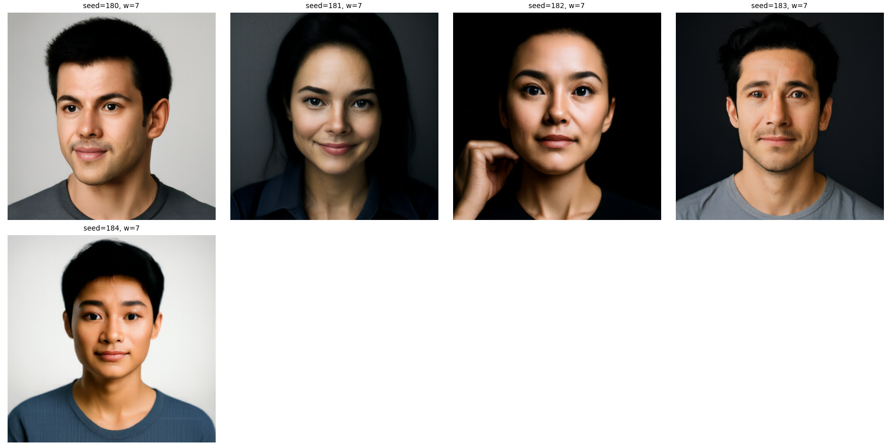
To write: Compare these samples with the unguided ones from Section 1.6 (same seeds, same starting noise). Discuss the improvement in image quality and prompt alignment (clean, coherent faces, studio-style lighting) and the loss of diversity (the samples look much more alike in pose, framing, and style).
Section 3: Creative Applications
3.1 Image-to-Image Editing
To write: Explain the SDEdit-style editing procedure: noise an existing image to a starting time with the forward process, then run the CFG Euler sampler (w = 7, h = 0.02, prompt "a high quality photo") from there to t = 1. Explain why this works (the model must "hallucinate" to denoise, pulling the image back onto the natural image manifold) and that a smaller starting time means more noise and a bigger edit. List the starting times used: 0.02, 0.04, 0.06, 0.10, 0.14, 0.25, 0.50.
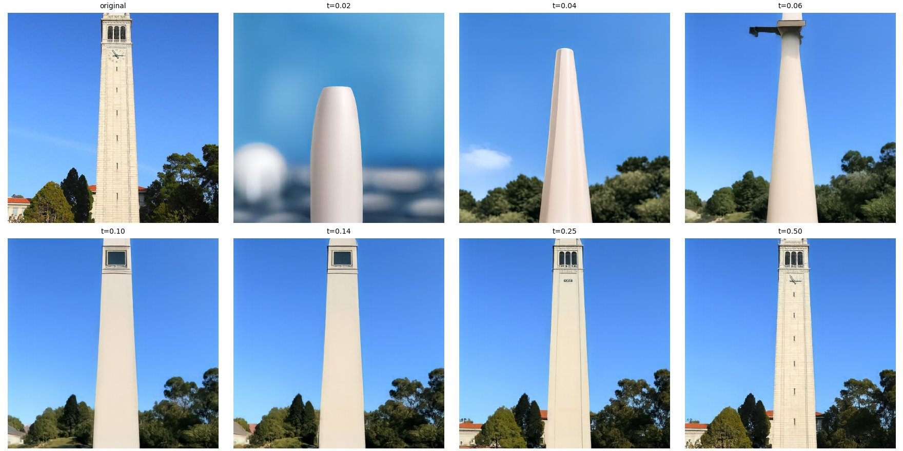
To write: Describe the Campanile progression: which features survive at each starting time (the pale vertical shape early on, the tower and trees by 0.06, the clock face and belfry arches only around 0.25–0.50).
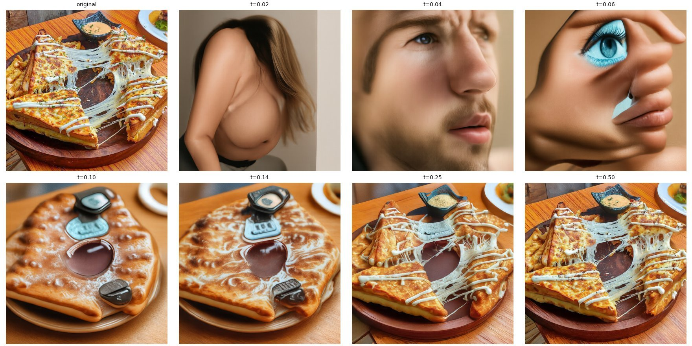
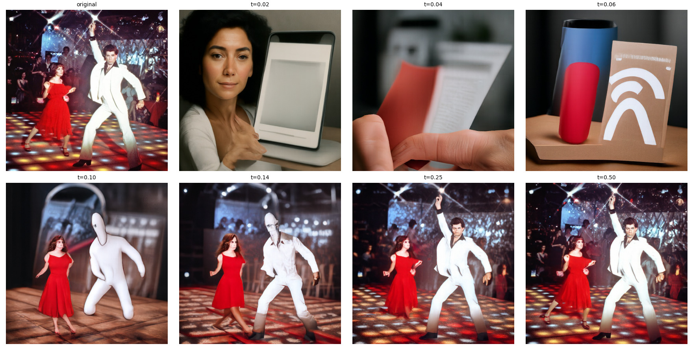
To write: Describe what happens with your own two images. For example, at the lowest starting times the model ignores the input and generates unrelated people or objects, around 0.10–0.14 it keeps the layout and colors but reinterprets the content (the plate becomes a flatbread, the dancer becomes a mannequin), and by 0.25 the original returns almost unchanged.
Editing Hand-Drawn and Web Images
To write: Explain that this procedure is especially interesting for non-realistic inputs (drawings, paintings, unusual web images), since projecting them onto the natural image manifold turns them into photos. Say where the web image came from and how you made your drawings.
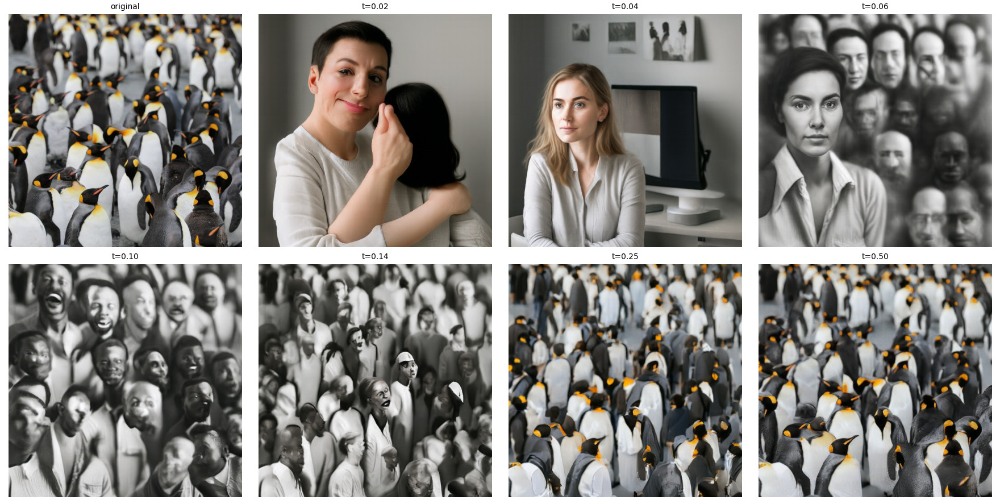
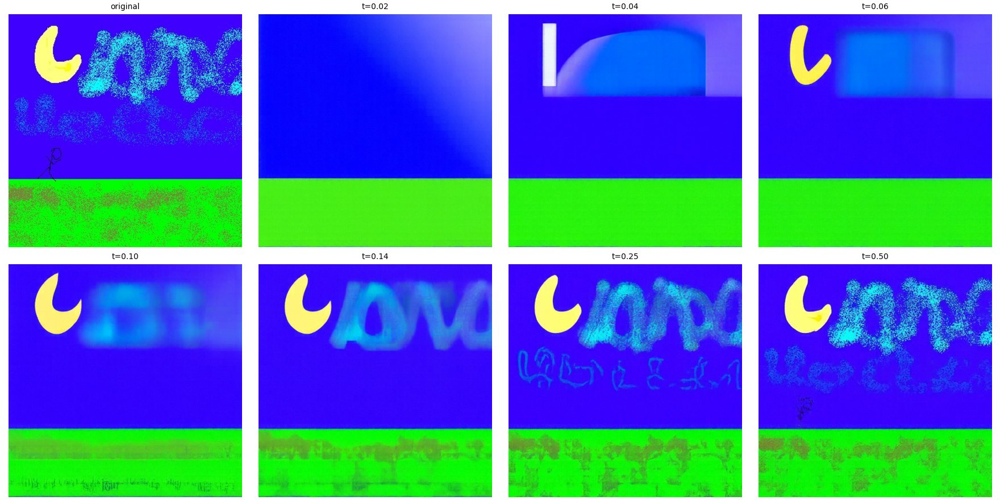
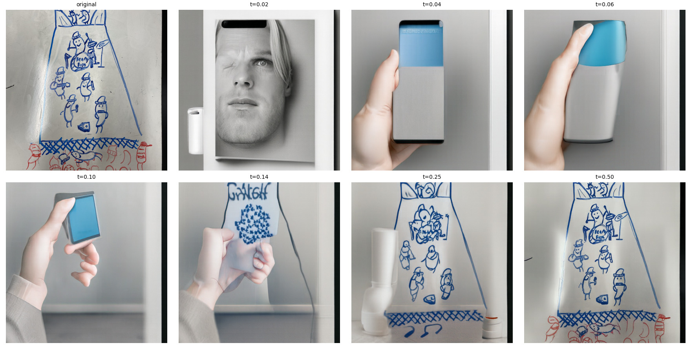
To write: Describe the results for the web image (the cartoon duck) and both drawings (the night scene and the city skyline). Highlight the most interesting edits and the starting time at which each input becomes recognizable again.
3.2 Text-Guided Image Editing
To write: Explain that this is the same editing procedure as 3.1, but with a custom prompt describing the desired edit instead of "a high quality photo". Describe the trade-off: smaller starting times let the prompt dominate, larger starting times preserve the original. State the prompt used for each image.
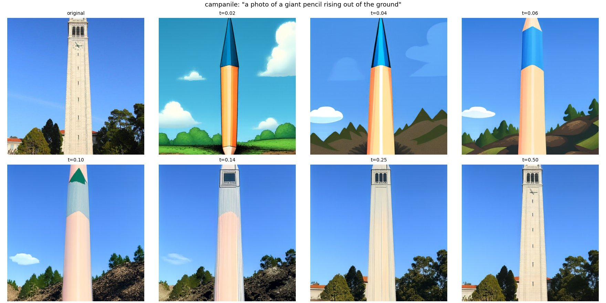
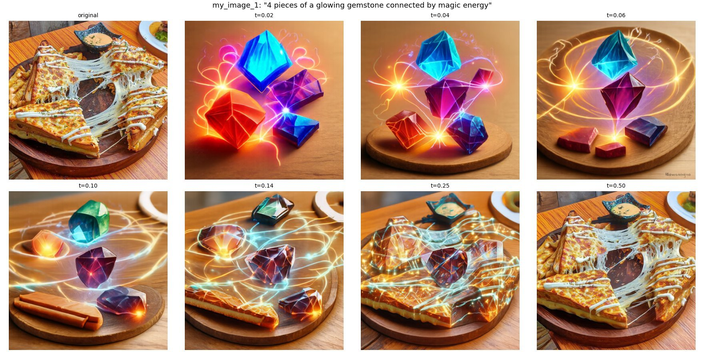
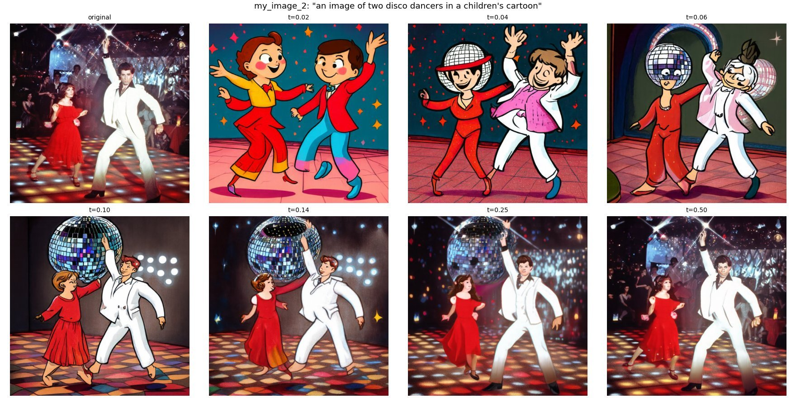
To write: For each of the three edits, describe where the prompt wins, where the original wins, and the most interesting in-between starting times where the result keeps the original's composition while taking on the prompt's content.
3.3 Visual Anagrams
To write: Explain how visual_anagrams works:
at each step compute v1 = CFG velocity of xt with prompt p1,
and v2 = flip(CFG velocity of flip(xt) with prompt p2), where flip
rotates by 180°. Average them, v = (v1 + v2) / 2, and take an Euler step
with v. Mention how many runs it took to get good results.
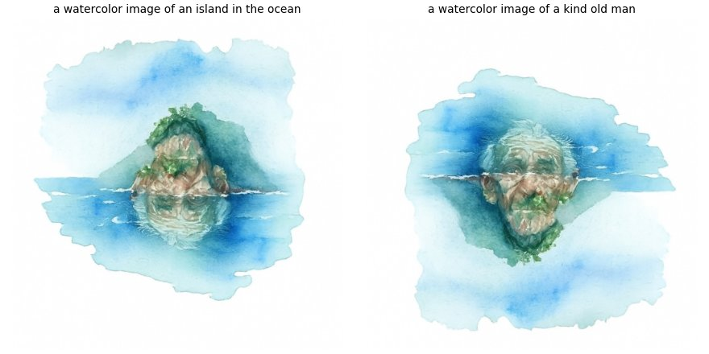
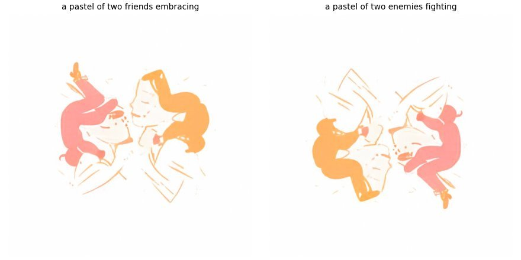
To write: Comment on how convincing each illusion is in both orientations, which prompt pairs worked well or poorly, and why (e.g., prompts sharing a style like "an oil painting of ..." tend to blend better).
3.4 Hybrid Images
To write: Explain how make_hybrids adapts
Factorized Diffusion: compute CFG velocities v1 and v2 for two prompts at
the same xt, then combine v = lowpass(v1) + highpass(v2), where
the low-pass is a Gaussian blur (kernel size 265, sigma 16) and the high-pass is the prediction
minus its low-pass. Connect this to the hybrid images from Project 2: the low-pass prompt is what
you see from far away and the high-pass prompt is what you see up close.
To write: Describe how well each hybrid works at full size versus small size, which prompt pairs were most successful, and how this generated approach compares to the filter-based hybrids from Project 2 (no alignment needed, and both interpretations are generated to be consistent with each other).
Part B: Flow Matching from Scratch
To write: A short introduction to Part B. Explain that, unlike Part A, you train your own model from scratch on MNIST. The warmup is a one-step denoising UNet. The main task is a flow matching model that predicts the velocity from noise to a clean digit, first conditioned on time and then also on the digit class.
Part 1: Training a Single-Step Denoising UNet
1.1 Implementing the UNet
To write: Describe the UNet you implemented. It downsamples with skip connections and then upsamples back to the image size. Name the blocks: Conv (changes channels, not resolution), DownConv (halves spatial size), UpConv (doubles spatial size), Flatten (7×7 average pool to 1×1), Unflatten (1×1 back to 7×7), and Concat (channel-wise skip connection). Note that composed blocks add depth without changing the tensor shape, and that D is the hidden-channel hyperparameter.
1.2 Using the UNet to Train a Denoiser
To write: State the training objective: given a noisy image z, the denoiser Dθ is trained with an L2 loss to recover the clean digit x. Explain the noising process z = x + σε with ε drawn from a standard normal, on MNIST digits normalized to [0, 1]. Point out that the images get noisier as σ increases across 0.0, 0.2, 0.4, 0.5, 0.6, 0.8, and 1.0.
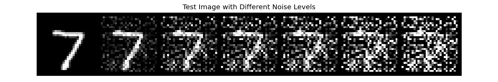
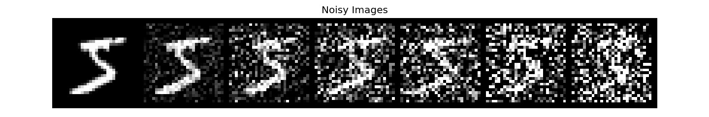
1.2.1 Training
To write: Describe the training setup. The model denoises images noised at σ = 0.5. Train only on the MNIST training set, shuffled, with a recommended batch size of 256, for 5 epochs. Noise each batch when it is loaded so every epoch sees a new ε. Use the UNet from 1.1 with D = 128 and Adam at learning rate 1e-4. Say how long training took.

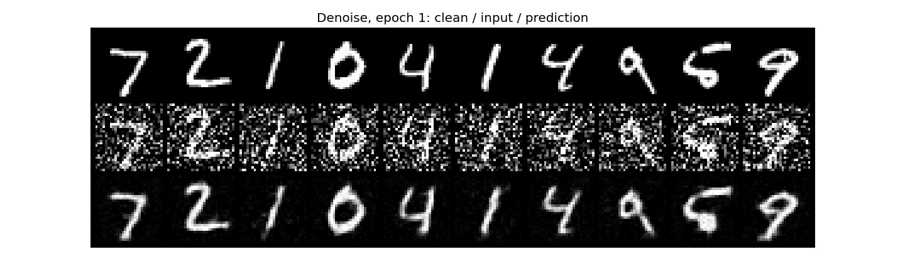
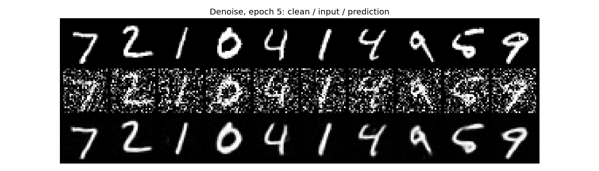
To write: Compare the epoch 1 and epoch 5 outputs. Note how much of the digit is recovered by the end of training, and what the loss curve does over the 5 epochs.
1.2.2 Out-of-Distribution Testing
To write: Explain that the denoiser only saw σ = 0.5 during training. Here the same test digit is noised at σ = 0.0, 0.2, 0.4, 0.5, 0.6, 0.8, and 1.0. Describe where denoising still works and where it breaks down as the noise moves away from the training level.
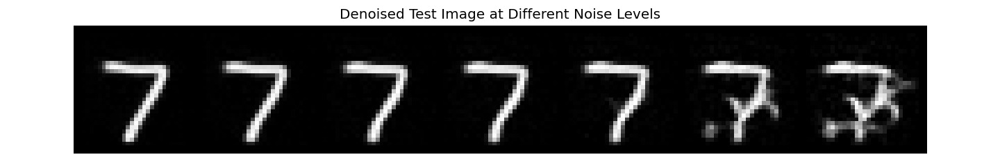
1.2.3 Denoising Pure Noise
To write: Explain the change in the task: the input is now pure Gaussian noise ε, with no noisy digit underneath, and the target is still a clean training image. Training otherwise matches 1.2.1 and runs for 5 epochs. This is an attempt to make one-step denoising generative.

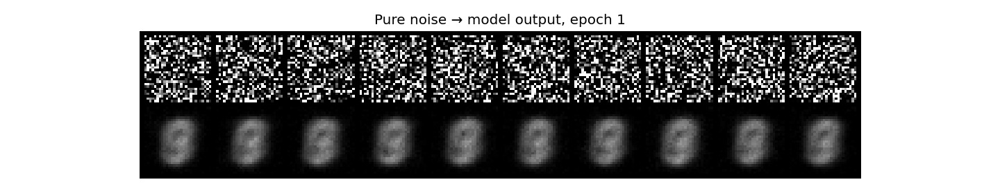
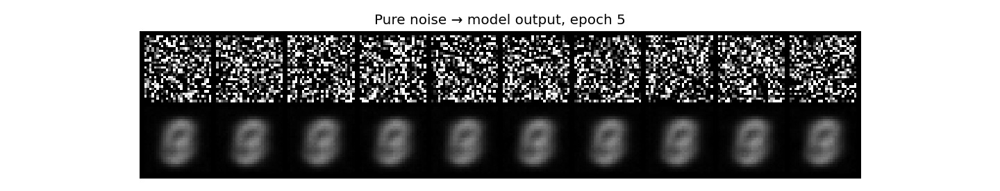
To write: Describe the patterns in the generated outputs and how they relate to the training digits 0–9. With an MSE loss the model predicts the point that minimizes the sum of squared distances to the training examples, like a centroid. Explain what that centroid is here (a blurry average digit rather than a sample of one class) and why one step from pure noise cannot produce varied, sharp digits.
Part 2: Training a Flow Matching Model
2.1 Adding Time Conditioning to the UNet
To write: Explain why one-step denoising fails as a generator and why flow matching iterates instead. Give the interpolation xt = (1 - t)x0 + t x1 and the flow u(xt, t) = x1 - x0. The UNet uθ(xt, t) is trained to match that flow. Describe how scalar t, normalized to [0, 1], is injected: two fully connected blocks, FCBlock, modulate the unflatten and the first upsampling block by multiplying those activations by the embedded time.
2.2 Training the Time-Conditioned UNet
To write: Describe training. Each step takes a random training digit x1, a random t, and noise x0, builds xt, and regresses the flow. Noise the batch when it is loaded. Recommended settings: MNIST training set, shuffled, batch size 64, hidden dimension D = 64, Adam with initial learning rate 1e-2, and an exponential learning-rate decay with gamma 0.1(1 / num_epochs), stepped once per epoch. Say how many epochs you trained.

2.3 Sampling from the Time-Conditioned UNet
To write: Explain iterative sampling: start from Gaussian noise and repeatedly step along the predicted flow until t = 1. Show samples after 1, 5, and 10 epochs. Describe how legible the digits get. They do not need to be perfect.
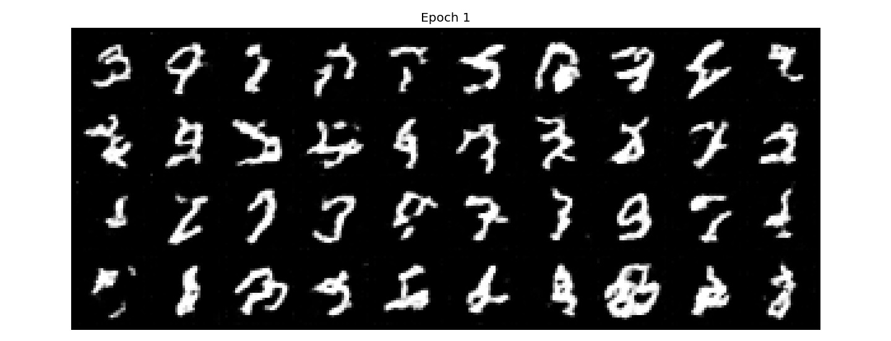
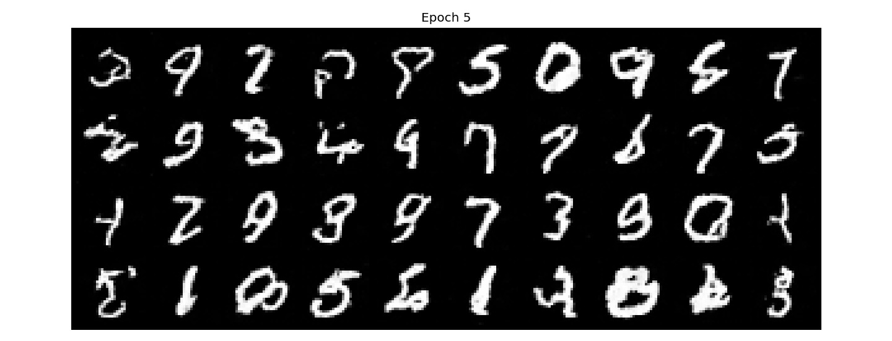
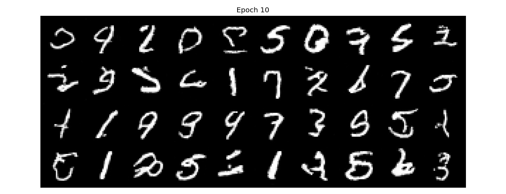
2.4 Adding Class Conditioning to the UNet
To write: Explain class conditioning. The class c is a one-hot vector over digits 0–9, not a scalar. Two more FCBlocks embed c, and the unflatten and first upsampling block become c1 · unflatten + t1 and c2 · up1 + t2. For classifier-free guidance, drop the class vector (set it to 0) 10% of the time, puncond = 0.1, so the model can also run unconditionally.
2.5 Training the Class-Conditioned UNet
To write: Note that training matches the time-only setup, except each batch also carries the class vector and the class is dropped on 10% of steps. Class conditioning converges faster, so training stops at 10 epochs.
_loss.jpg)
2.6 Sampling from the Class-Conditioned UNet
To write: Explain sampling with classifier-free guidance at γ = 5.0. For each of epochs 1, 5, and 10, show 4 generated instances of every digit 0–9. Compare these with the time-only samples from 2.3: sharper digits, faster convergence, and control over which digit appears.
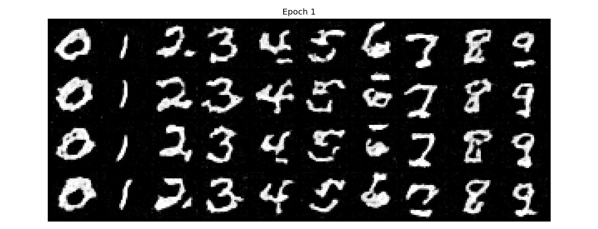
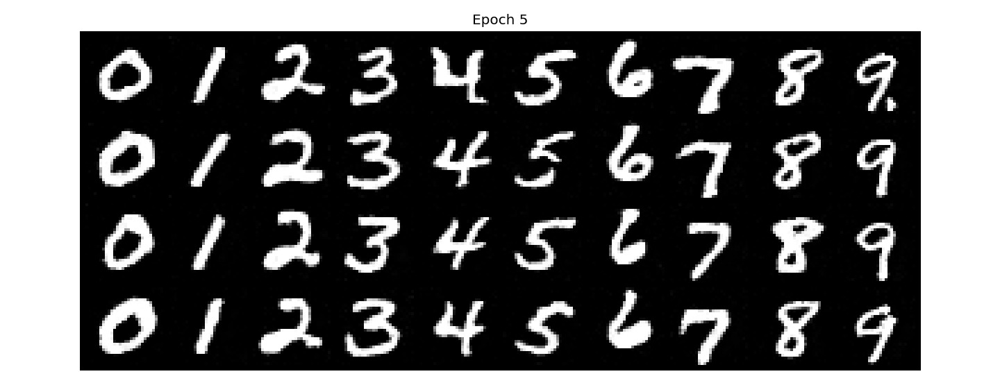
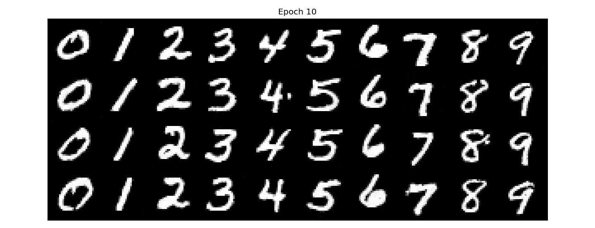
To write: Describe the attempt to drop the exponential learning-rate scheduler while keeping the same sample quality. Say what you changed to compensate (for example a different learning rate or schedule) and whether the samples still match the run that used the scheduler.
_loss.jpg)
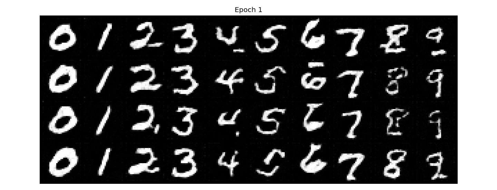
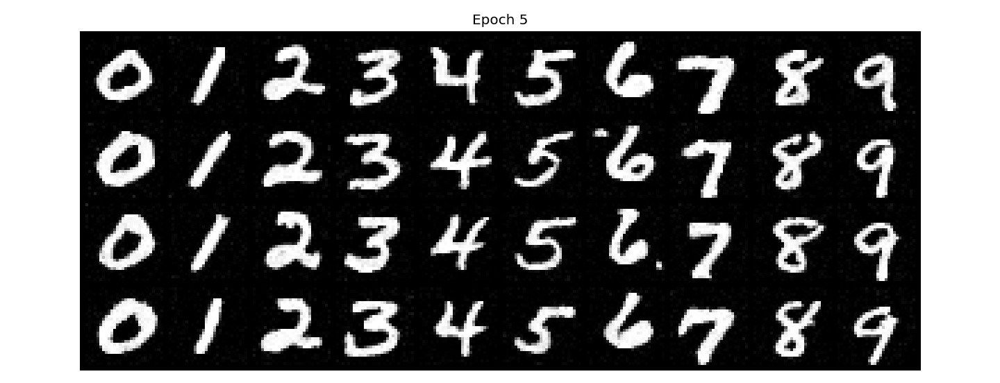